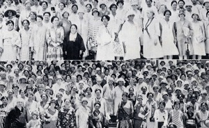

This is an archived copy of History Matters, provided by the Roy Rosenzweig Center for History and New Media. To explore this content in a new interface, visit Who Built America?.

Women and Social Movements in the United States, 16002000: Scholar’s Edition
http://asp6new.alexanderstreet.com/was2/was2.index.map.aspx
Created and maintained by Kathryn Kish Sklar and Thomas Dublin. Published by Alexander Street Press.
Reviewed Oct. 2010.
This Web site, first launched in 1997 by two history professors at the State University of New YorkBinghamton to house “document projects” that they and their students were compiling, initially functioned as an electronic anthology on women’s involvement in social movements. Recently, the site was dramatically improved. There are now twelve main sections (including book reviews, a chronology, movements, and teaching tools) and better search engines, making the site more useful to researchers, instructors, and students. In 2007 new material from the Commissions on the Status of Women in the United States (1963 to 2005) were added, as well as the original biographical entries published in Notable American Women (5 vols., 19712004). In October 2010 the editors were scheduled to upload new documents pertaining to U.S. women’s participation in international conferences and organizations from 1840 to 2000, an addition that will once again enhance the scholarly possibilities of this remarkable site.

The core of the site is the ninety-four document projects that scholars and students have contributed over the years. Each project highlights a central question, includes an analytical essay that addresses the question, and provides links to approximately forty primary sources. Every year approximately three to eight new projects appear on the site after they have been featured in the site’s online journal, which is updated quarterly.
The editors of the site, Kathryn Kish Sklar and Thomas Dublin, are highly skilled in helping contributors formulate questions central to U.S. women’s and gender history. A decade ago many of these projects focused on racial and class diversity in the late nineteenth and early twentieth centuries (e.g., “How Did Black and White Southern Women Campaign to End Lynching, 18901942?”; “How Did Gender and Class Shape the Age of Consent Campaign within the Social Purity Movement, 18861914?”; “What Gender Perspectives Shaped the Emergence of the National Association of Colored Women, 18951920?”). Attention to race and class has continued, but the topics have grown increasingly more extensive, both thematically and chronologically. Recent projects have attended to cross racial alliances among working-class women in the National Congress of Neighborhood Women, 19762006 (Tamar Carroll, 2006); African American women’s analysis of the problem of Jane Crow (Cynthia Taylor, 2007); attitudes toward women’s sexual roles in colonial St. Louis (Patricia Cleary, 2008); and Canadian women’s liberation (Roberta Lexier, 2009). Some of the document projects are authored by well-known scholars and offer chances to see how experienced historians interpret sourcesNancy A. Hewitt, Catherine Clinton, Joyce Antler, Nancy C. Unger, and Mary H. Blewett have all contributed projects. Sklar has assiduously documented the extended history of the equal rights amendment and has recently focused on postWorld War II events. Dublin has authored numerous projects on temperance, labor, peace, antilynching, and suffrage movements from the 1880s through the 1930s.
In addition to “Document Projects,” there are two (relatively) new sections that instructors will find immensely useful: “Movements” and “Teaching Tools.” The “Movements” section (which is easily re-sorted so that items appear in chronological order) gives brief descriptions of the organizations that appear in the document projects, beginning with the Religious Society of Friends, founded in 1652, and extending through the Women’s Action Coalition, founded in 1992. All of the significant social reform movements of the nineteenth century are represented, including the Second Great Awakening, temperance, moral reform, social purity, antislavery, dress reform, water cures, suffrage, freedmen’s aid, eight-hour day, age-of-consent, and utopian socialism. The Progressive Era is equally well represented with documents pertaining to antilynching, anti-sweatshop, settlement houses, black and white women’s clubs, juvenile courts, Populism, maternalism, suffrage, birth control, peace, the equal rights amendment, labor, and civil rights. Unfortunately, there are fewer projects for the mid- and late twentieth century (eighteen when I last checked). One can only hope that the editors will soon add more. Still, there is excellent material pertaining to the National Women’s Conference of 1977, the movement to end violence against women, the equal rights amendment, and the women’s arts movement.
The “Teaching Tools” section offers excellent materials for guiding students through the interpretation of primary sources and teaching the art of writing short essays. This section is still quite limited in chronological scope and topic, however. There is just one eighteenth-century topic (political women in the American Revolution), four nineteenth-century topics (women’s dress reform, women and freedmen’s aid after the Civil War, woman suffrage in Colorado, and African American women’s involvement in the Woman’s Christian Temperance Union), and seven twentieth-century topics, including the Lawrence, Massachusetts, textile strike of 1912, Florence Kelley and the Illinois Sweatshop Law, and the National Woman’s party and suffrage for African American women. In each case, an original document project is distilled into eight primary sources, accompanied by leading questions that guide students through each of the sources.
Finally, the “Teaching Strategy” subdivision of the “Teaching Tools” section contains lesson plans for instructors. Again, not all the document projects have been adapted to this format, and only some of the projects that were modified for the document-based questions reappear here. However, for certain topics (e.g., the San Antonio Pecan Strike of 1938 or Booker T. Washington’s and W. E. B. Du Bois’s views on woman suffrage), it is possible to develop lessons plans and then use the document-based section to create assignments for students. Oddly, the topics are listed alphabetically and are not sortable by time period. Still, the list of topics is of manageable length, and instructors will be able to identify topics that fit well within already-prescribed curricula for U.S. history and women’s history survey courses. For example, there are good units on woman’s rights and the antislavery movements of the 1840s; birth control in the Progressive Era; the Red Scare and women’s peace activism in the 1920s; and antilynching campaigns, in addition to the more specialized topics that are drawn directly from the document projects.
In all, this rich and versatile site repays the time spent to explore it in depth. The only problem is that access to it is not free. Users must belong to an institution that has a subscription or pay a fee to access most of the material.
Louise Newman
University of Florida
Gainesville, Florida